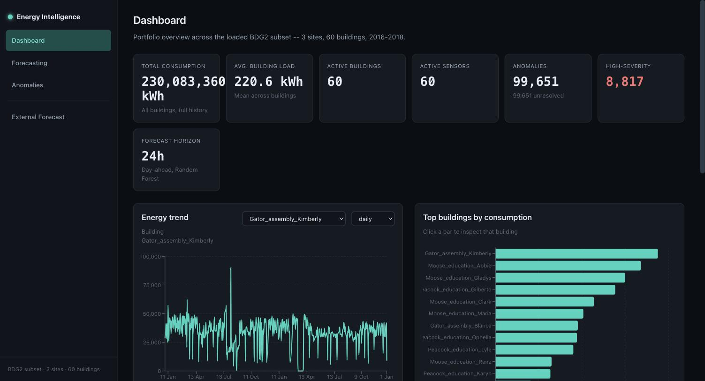
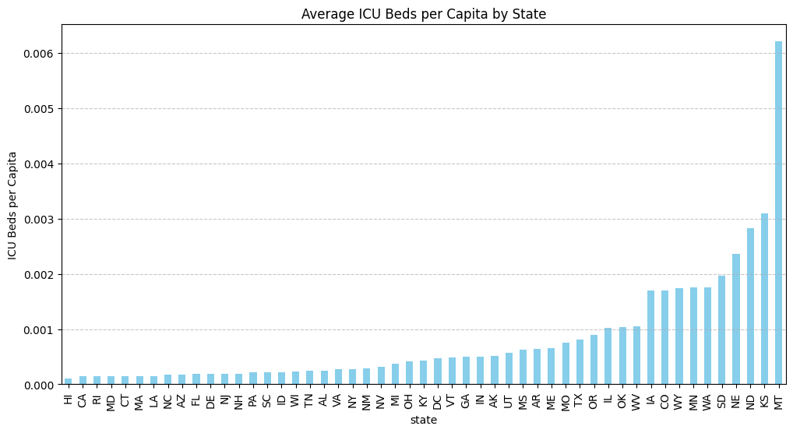
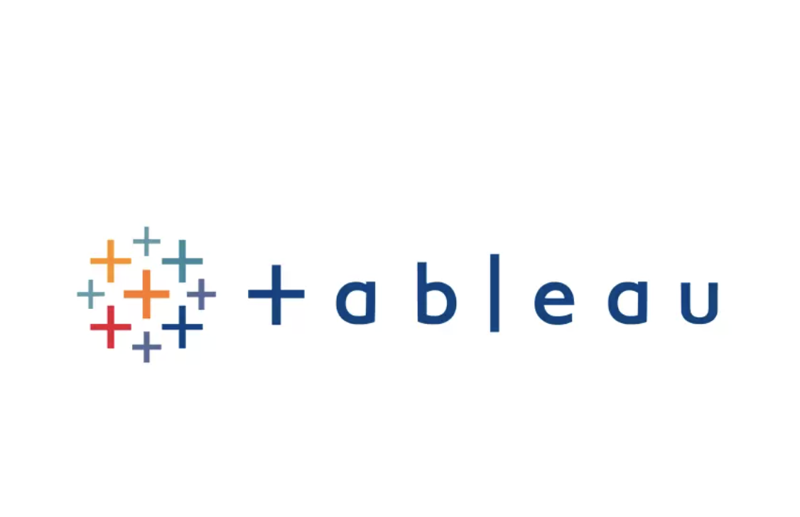

A full-stack energy analytics platform built on the Building Data Genome Project 2 dataset — 60 real buildings, over a million hourly electricity readings. A FastAPI and PostgreSQL backend feeds a Random Forest model that forecasts each building's next 24 hours of consumption (test RMSE 29.22 kWh vs. 77.64 kWh for the strongest seasonal-naive baseline) and four anomaly detectors evaluated against a synthetic injection benchmark, since the dataset has no real anomaly labels. A React and TypeScript dashboard exposes both, alongside an external-inference feature that scores a building the model has never seen. Runs locally via Docker Compose, backed by 310 backend and 29 frontend tests — not deployed to the cloud, by design.


An end-to-end data science case study merging eight Eurostat datasets on Croatia's fishing industry. After IQR-based outlier cleaning, a Gradient Boosting regression model reached R² = 0.9174, a four-way classifier comparison (SVM, Naive Bayes, Logistic Regression, KNN) identified Logistic Regression as the strongest performer, and K-means clustering with PCA — validated via elbow and silhouette methods — surfaced distinct fleet groupings.
A computational-neuroscience project reducing a spiking neural network model of a two-leg spinal central pattern generator, built in the NEST simulator. The reduced network keeps roughly 2.45% of the baseline's synapses while preserving the flexor/extensor alternation that produces walking-like rhythm (corr(Force) = −0.957 ± 0.010 across 8 seeds, vs. −0.953 for the full network). Full methodology in the Research section below.
A cinema ticket reservation system built with a partner as coursework for the Graphical User Interface (EGUI) course at Warsaw University of Technology, using ASP.NET Core MVC, Entity Framework Core, and MySQL with ASP.NET Identity for authentication.
My contributions:
- User authentication and Identity integration
- Seat selection and booking logic
- Movie and showtime management
- Database design and Entity Framework Core
- Frontend views and UI
- Admin dashboard
- Testing and debugging

Cleaning and standardizing a movies dataset using SQL to improve data quality and consistency.

Analyzing ICU bed capacity across 3,142 US counties to identify regions at highest risk of shortage, using Python for data cleaning and analysis. Over half of US counties (50.5%) fall into the high-risk category, with a median of 0.0002 ICU beds per capita. Explore the interactive dashboard on Tableau Public.

This section showcases a collection of data visualization projects created using Tableau
Biologically detailed spinal central pattern generator (CPG) models are large and computationally expensive to simulate. This project asks how far a spiking neural network model of a two-leg CPG can be reduced — in both connectivity and neuron count — before it loses the flexor/extensor alternation that produces walking-like rhythm.
Built on the open-source NEST simulator, extending the third-party tinyCPG framework, the reduced network keeps k = 0.20 connectivity and m = 0.35 neuron count — 35 rhythm-generator neurons per half-centre and 17 interneurons, roughly 2.45% of the baseline network's synapses. Two corrections made this work: inhibitory weight compensation (scaling up the surviving reciprocal-inhibition synapses to replace those lost to reduction) and activation-gate recalibration (re-centering the readout that converts firing rate into muscle force, calibrated for the intact network's firing range).
The reduced network preserves extensor/flexor anti-correlation at corr(Force) = −0.957 ± 0.010 across 8 random seeds, against a full-network baseline of −0.953 — essentially matching the original circuit's behavior at a fraction of its size. All figures are the project's own recorded experiment results (staged E0–E8g summaries, CSVs, and force-trace plots committed to the repository); they were not independently reproduced for this portfolio.
Data Science & Machine Learning
Python, Pandas, scikit-learn (Random Forest, Gradient Boosting, Isolation Forest, SVM, KNN, Logistic Regression, K-means, PCA), Jupyter, NEST (spiking neural networks)
Backend & Software Engineering
FastAPI, ASP.NET Core MVC, Entity Framework Core, ASP.NET Identity, C#
Frontend
React, TypeScript
Databases
PostgreSQL, MySQL, BigQuery, Alembic migrations
Data Visualization
Tableau
Infrastructure
Docker, Docker Compose
Foundations
Algorithms (Python), SQL, Assembly (RISC-V & x86 NASM), JavaScript — see GitHub
Biniyam Awalachew Firde is based in Messina, Italy, working across data analysis, machine learning, and software engineering. Recent work spans a full-stack energy analytics platform with forecasting and anomaly detection, computational neuroscience research on spiking neural networks, and applied data science projects using SQL, Python, and Tableau.